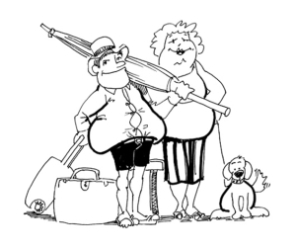

This page has usage examples for the following words:
accumulation of internal fat 内臓脂肪蓄積 ないぞうしぼうちくせき
fat 脂肪 しぼう
height 身長 しんちょう
ideal weight 理想の体重 りそうのたいじゅう
muscle 筋肉 きんにく
muscular type, muscular person 筋肉質の人 きんにくしつのひと
obese 肥満 肥満した ひまん
obesity 肥満症 ひまんしょう
subcutaneous fat 皮下脂肪 ひかしぼう
weight 体重 たいじゅう

My body mass index is 24.
身体重量指数が２４です。
しんたいじゅうりょうしすうが２４です。
Am I considered overweight?
やや太り気味ですか。
ややふとりぎみですか。
How much more weight should I lose ?
あとどの位減量する必要がありますか。
あとどのくらいげんりょうするひつようがありますか。
I have a tendency of being fat in specific areas, such as around the waist.
お腹のまわりなど、部分的に脂肪過多の傾向があります。
おなかのまわりなど、ぶぶんてきに しぼうかたのけいこうがあります。
Which is the better method to lose weight, dieting or exercising?
どんな方法で減量すればよいですか。食餌療法や運動療法ですか。
どんなほうほうで げんりょうすればよいですか。しょくじりょうほうや うんどうりょうほうですか。
A conversation between a patient and a doctor about obese
Patient:
I hear that in order to determine whether or not you are obese, it is more accurate to use body mass index (BMI) than to calculate conventionally、 using height and weight.
肥満かどうかを知るには、従来の身長と体重から計算する方法よりも、BODY MASS INDEX (BMI) を使った方法の方が、より正確といわれていますが・・・
Doctor:
That is correct. The conventional method could not differentiate a muscular-type person from non-muscular type. However, BMI is influenced by sex, age and race. Thus, different BMI values are used according to sex, age and race. For example, currently, for people between 20 and 29 years old, obesity is defined for men with BMI 27.8 kg/m2 or more, for women 27.3 kg/m2 or more. Obesity is defined at lower BMI values in Asians than in Europeans (for Asians, BMI 27.5 kg/m2 or higher is considered high risk). People whose BMI values fall between normal and obese are called overweight persons. In some statistic studies, overweight is defined as BMI 25.0-29.9 kg/m2 and obesity as BMI30.0 kg/m2.
Because body fat is difficult to measure in a clinical setting, the following formula is used to estimate indirectly body fat.
BMI = body weight (kg) /height (m)2
Example: if you have the body weight 55 kg and height 160cm,
BMI=55/1.6x1.6= 21.48 kg/m2
その通りです。従来の方法ですと、筋肉質の人とそうでない人の区別は出来ませんでした。ただし、BMIを使って肥満かどうかを決める数値は、性別、年齢、人種によって違います。例えば、肥満は、男性ではBMI 27.8kg/m2以上、女性ではBMI 27.3kg/m2以上であり、アジア系は ヨーロッパ系より基準の数値が低くなります（アジア系では、BMI 27.5kg/m2以上であれば、肥満度は危険な段階にあるとされています）。BMI値が正常（normal）と肥満（obese)の間にあるひとはoverweightとよばれます。Overweightを BMI 25.0―29.0kg/m2 とし、obesityをBMI 30.0kg/m2以上と規定している調査報告もあります。Body Mass Indexは、身体重量指数とでも訳しますが、実際に身体の脂肪の量を測定することは困難ですから、下記の式で概算します。現在、40才台の米国人の40％（男）、41％（女）が肥満とされ、肥満が主な原因といわれる心臓病、糖尿病が増加し続けています。
BMI = 体重kg/身長m２
（例）体重が55kg身長が160cm の場合は、
BMI=55/1.6x1.6=21.48 となります。
My two cents 一言おせっかい
If you use pounds for body weight and inches for height, convert them to kilograms and meters and calculate. Although there is a formula for pounds and inches, the results differ quite a bit from those by metric values.
体重をパウンド、身長をインチで測定する場合の計算式もありますが、それぞれ、キログラムとセンチメーターに換算して上記の式を使ったほうがより正確です。
無理な食餌療法は危険です。
[hi02]
| © 1995-2013 NACOS International Institute. All Rights Reserved. |